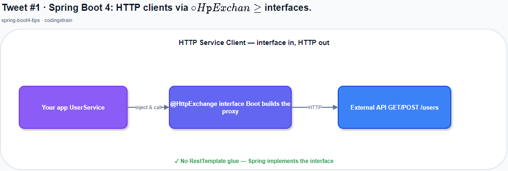

Tweet #1
Architecture — diagrams.net

Code preview
@HttpExchange(url = "https://api.example.com")
public interface UserClient {
@GetExchange("/users/{id}")
User findById(@PathVariable Long id);
@PostExchange("/users")
User create(@RequestBody User user);
}// Inject and call like any Spring bean
@Service
public class UserService {
private final UserClient users;
public UserService(UserClient users) {
this.users = users;
}
public User get(Long id) {
return users.findById(id);
}
}Copy for X (240/280)